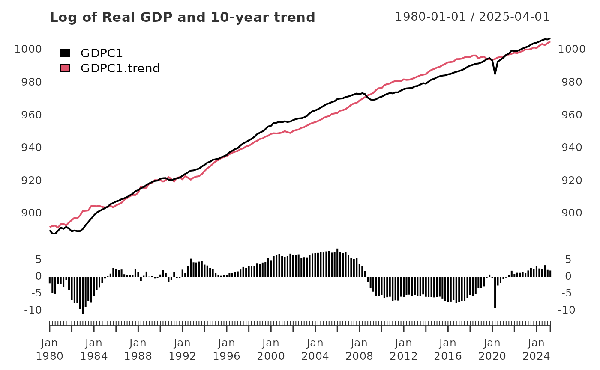

Getting started
Justin M Shea
Getting-started.RmdIntroduction
The neverhpfilter package consists of 2 functions, 12 economic data sets, Robert Shiller’s U.S. Stock Markets and CAPE Ratio data from 1871 through 2019, and a data.frame containing the original filter estimates found on table 2 of Hamilton (2017) <doi:10.3386/w23429>. All data objects are stored as .Rdata files in eXtensible Time Series (xts) format.
One of the first things to know about the neverhpfilter package is that it’s functions accept and output, xts objects. The author uses xts often as it remains one of the most efficient data objects for managing times series data in econometrics and finance.
An xts object is a list consisting of a vector index of some date/time class paired with a matrix object of singular data type. In our case, type numeric. data.table is also heavily used in finance and has efficient date/time indexing capabilities as well. It is useful when working with large data.frame like lists containing vectors of multiple data types of equal length. If using data.table or some other index based time series data object, merging the xts objects created by functions of this package into your preferred data object should be fairly easy. Note xts is a dependency listed under the “Suggests” field of data.table DESCRIPTION file.
For more information on xts objects, go here and here.
yth_glm
The yth_glm function primarily exists to model the output for the yth_filter. However, one can use this wrapper around glm independently. On that note, the function API allows you to use the ... to pass any additional arguments to glm.
The yth_filter returns an object of class glm, so one can use all generic methods associated with objects of that class. Here is an example of passing the results of a yth_glm model to the plot function, which outputs the standard plot diagnostics associated with the method.
library(neverhpfilter)
data(GDPC1)
log_RGDP <- 100*log(GDPC1)
gdp_model <- yth_glm(log_RGDP["1960/"], h = 8, p = 4)
plot(gdp_model)


yth_filtered
This is the main function of the package and both accepts, and outputs an xts object. The resulting output contains various series discussed in Hamilton (2017). These are a user defined combination of the original, trend, cycle, and random walk series. See documentation and the original paper for further details.
## GDPC1 GDPC1.trend GDPC1.cycle GDPC1.random
## 2016 Q1 977.3199 975.9314 1.38849907 5.504498
## 2016 Q2 977.7891 977.6994 0.08976908 4.629141
## 2016 Q3 978.3300 978.9168 -0.58689409 3.956428
## 2016 Q4 978.8314 978.9090 -0.07763289 3.896668
## 2017 Q1 979.3966 979.8501 -0.45353289 3.680096
## 2017 Q2 979.9296 980.7149 -0.78533629 3.474445
## 2017 Q3 980.7173 980.9087 -0.19148950 3.932021
## 2017 Q4 981.5883 980.9621 0.62621866 4.770558
## 2018 Q1 982.2183 981.6983 0.51996165 4.898397
## 2018 Q2 983.0817 982.1631 0.91853200 5.292531
## 2018 Q3 983.8027 982.5772 1.22552791 5.472747
## 2018 Q4 984.0737 983.0587 1.01497716 5.242256
## 2019 Q1 984.8360 983.6085 1.22741948 5.439365
## 2019 Q2 985.3344 984.1252 1.20921894 5.404844
## 2019 Q3 985.8548 984.9280 0.92687627 5.137579
## 2019 Q4 986.3695 985.7645 0.60492133 4.781143## [1] "xts" "zoo"The output is an xts object, it inherits all generic methods and capabilities associated with xts. For example, one can conveniently produce clean times series graphics with plot.xts.
Not the use of xts::addPanel function, which adds a panel plot of the cycle output of the yth_filter to the original graph.
plot(log_RGDP, grid.col = "white", col = "blue", legend.loc = "topleft", main = "100 x Log of Real GDP (GDPC1)")

Choices for h and p
In the paper that inspired this package, Hamilton converts the PAYEMS series into quarterly periodicity and then uses filters on the transformed time series. With the yth_filter function, one can choose to retain the monthly series and adjust the h and p parameters accordingly. The default parameters of h = 8 and p = 4 assume times series data of a quarterly periodicity. For time series of monthly periodicity, one can retain the same look-ahead and lag periods with h = 24 and p = 12. See the yth_filter documentation for more details.
Employment_log <- 100*log(PAYEMS["1950/"])
employment_cycle <- yth_filter(Employment_log, h = 24, p = 12, output = "cycle")
plot(employment_cycle, grid.col = "white", type = "h", up.col = "darkgreen", dn.col = "darkred",
main = "Log of Employment cycle")
In addition to adjust for various periodicities, one may wish to consider longer term cycles by extending h. Below are examples of moving the look-ahead period defined by h from 8 quarters (2 years), to 20 quarters (5 years), and then 40 quarters (10 years).
gdp_5yr <- yth_filter(log_RGDP, h = 20, p = 4, output = c("x", "trend", "cycle"))
plot(gdp_5yr["1980/"][,1:2], grid.col = "white", legend.loc = "topleft",
main = "Log of Real GDP and 5-year trend",
panels = 'lines(gdp_5yr["1980/"][,3], type="h", on=NA)')
gdp_10yr <- yth_filter(log_RGDP, h = 40, p = 4, output = c("x", "trend", "cycle"))
plot(gdp_10yr["1980/"][,1:2], grid.col = "white", legend.loc = "topleft",
main = "Log of Real GDP and 10-year trend",
panels = 'lines(gdp_10yr["1980/"][,3], type="h", on=NA)')